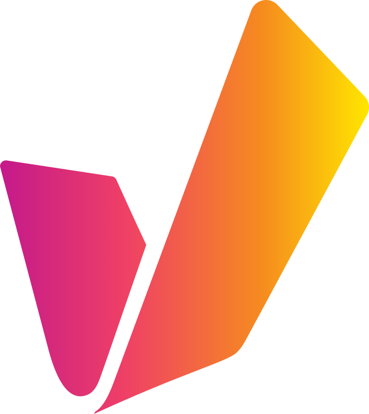

V

Advanced Full-Stack Developer, AI Systems
Vidispine GmbH (Lumine Group) · formerly Arvato Systems
Oct 2024 — Present
- Designed and shipped Vidinet Cognitive Services (VCS), the production AI backend powering MediaPortal and now used by 5 enterprise customers — REST APIs in FastAPI and C# consolidating 7 LLM and vision providers behind a unified contract.
- Designed and shipped AutoNewsGPT for Al-Jazeera end-to-end: an agentic pipeline of GPT tool use, a TTS voice analyzer, and the Twelve Labs Pegasus video model that cuts an hour-plus editorial process to ~30 seconds.
- Integrated non-deterministic AI inference into the Vidiflow BPMN workflow engine via AWS Lambda and RabbitMQ, orchestrating 1,000+ inference tasks per month without breaking throughput SLAs.
- Implemented observability across 6 FastAPI and Node.js services, cutting mean time to debug multi-step pipeline failures from hours to minutes.
- Led the React/TypeScript revamp of MediaPortal, shipping multilingual metadata across 24 languages and a SKOS-based semantic API to the European Parliament.
- Maintained CI/CD pipelines on Azure DevOps and containerised AWS deployments across all environments.